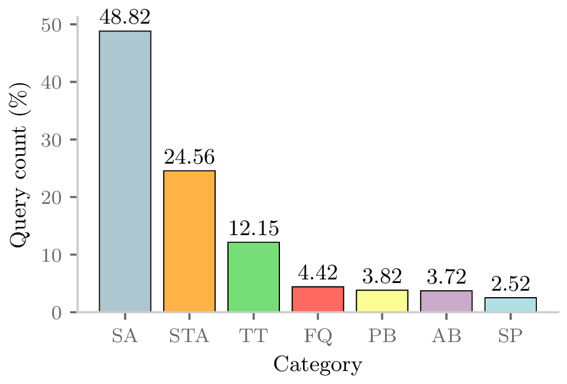

WebLive
Hosted research demo
Explore VayuChat without installing anything. Ask about pollution, meteorology, populations, and NCAP funding.
Launch the SpaceResearch system · CODS 2025
VayuChat translates natural-language questions into constrained analysis plans, validates them against real Indian environmental data, and returns an answer, table, or chart.
plan["c", null, "city", "cities"]guardschema + scope verifiedDistinct cities
50 computed locally from the bundled datasetSee it work
The public Hugging Face Space is the fastest way to explore the research system. The browser prototype runs client-side after its first model download.
One research idea, three surfaces
The native pilots bundle both the model and data. Questions, rows, and results stay on the device; the language model proposes a compact plan and native code performs the calculation.
Explore VayuChat without installing anything. Ask about pollution, meteorology, populations, and NCAP funding.
Launch the SpaceSwiftUI, Swift Charts, a bundled Gemma 3 270M planner, and a native executor over 146,459 daily city records.
Invite link shown after release verificationNative tables and charts, grammar-constrained planning, no Python runtime, and no Internet permission.
Physical-device qualification in progressUseful outputs, not chat filler
VayuChat returns the output type that fits the question: a direct scalar, a sortable table, a legible plot, or a guarded abstention when the requested data is unavailable.

Counts, means, rankings, thresholds, and comparisons.
Grouped and filtered results with the underlying values visible.
Bar, line, scatter, and correlation views rendered from computed data.
Unknown places, dates, measures, and unsafe substitutions fail closed.
The benchmark behind the interface
The benchmark pairs 5,000 natural-language questions with verified Python across seven spatial, temporal, demographic, funding, and pattern-analysis categories. Thirteen open-source models were evaluated under one schema-aware protocol.
Why it matters: executable code is not the same as a correct answer. The evaluation checks both, exposing column, variable, syntax, and semantic errors that surface in environmental decision support.

Models, data, and code
Public research artifacts are linked directly. Fine-tuned mobile weights and native app repositories remain private while release and device qualification are in progress.
A Q8-quantized, fine-tuned planner emits a fixed compact JSON grammar. It selects the operation; it does not invent the numerical result.
Private release artifact · model card pendingThe current phone pilots cover 50 Indian cities from 1 January 2017 through 31 December 2025, refreshed from CPCB CAAQMS daily archives.
Explore the public benchmark dataPublications
VayuChat grows from our work on accessible air-quality analysis, then adds executable evaluation through VayuBench and on-device deployment.
Research paper
System demonstration
Predecessor system
Cite the benchmark
@inproceedings{acharya2025vayubench,
title={VayuBench and VayuChat: Executable Benchmarking and Deployment of LLMs for Multi-Dataset Air Quality Analytics},
author={Acharya, Vedant and Pisharodi, Abhay and Pasi, Ratnesh and Mondal, Rishabh and Batra, Nipun},
booktitle={13th ACM IKDD International Conference on Data Science},
year={2025},
doi={10.1145/3799830.3799884}
}